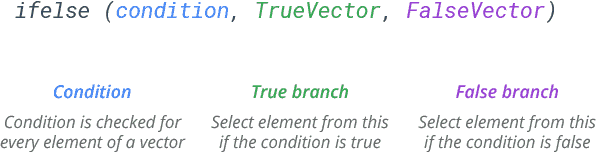
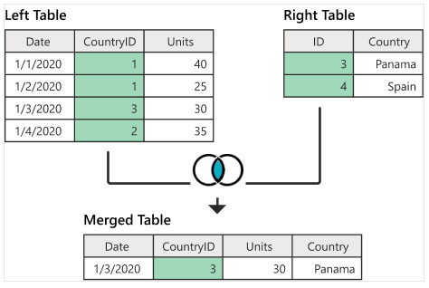
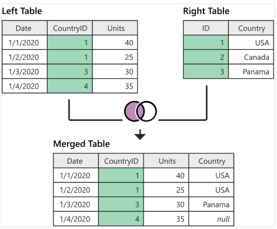
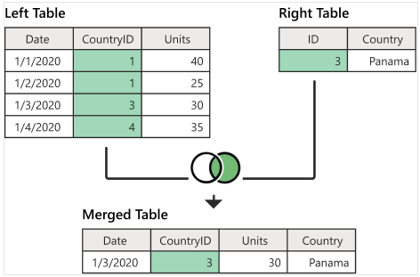
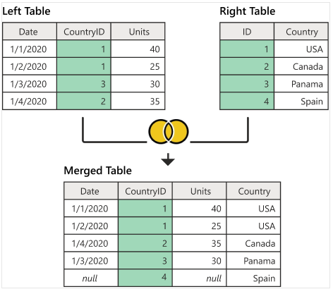

Topic 4 Effective Data Preparation
In this note, we use a health registry data set as an example to illustrate the use of some of the base R commands in creating an analytic data set analysis and modeling.
4.1 Data Set Description
The Current Population Survey (CPS, http://www.bls.census.gov/cps/overmain.htm) is a monthly survey of about 50,000 households conducted by the Bureau of the Census for the Bureau of Labor Statistics. The survey has been conducted for more than 50 years. The CPS is the primary source of information on the labor force characteristics of the U.S. population. The sample is scientifically selected to represent the civilian noninstitutional population. Respondents are interviewed to obtain information about the employment status of each member of the household 15 years of age and older. However, published data focus on those ages 16 and over. The sample provides estimates for the nation as a whole and serves as part of model-based estimates for individual states and other geographic areas.
Estimates obtained from the CPS include
- employment,
- unemployment,
- earnings,
- hours of work, and
- other indicators.
They are available by a variety of demographic characteristics including * age, * sex, * race, * marital status, and * educational attainment.
They are also available by
- occupation,
- industry, and
- class of worker.
Supplemental questions to produce estimates on a variety of topics including
- School enrollment,
- income,
- previous work experience,
- health,
- employee benefits, and
- work schedules
are also often added to the regular CPS questionnaire.
CPS data are used by government policymakers and legislators as important indicators of our nation’s economic situation and for planning and evaluating many government programs. They are also used by the press, students, academics, and the general public.
In this note, we use a very small portion of the sample (https://raw.githubusercontent.com/pengdsci/sta321/main/ww04/cps_00003.csv) for illustrative purposes. The definitions of some of the variables can be found at (https://www.bls.gov/cps/definitions.htm). We will not use this data to perform any meaningful analysis.
The first few columns are what could be called administrative. They’re unique identifiers for the different observations, the timing of the survey they’ve taken, and a bit of other information. So for now we don’t need to pay much attention to MONTH, HWTFINL, CPSID, PERNUM, WTFINL, or CPSIDP. We will drop these variables.
The next few columns are concerned with the different geographies we have for the observations. This data is for individuals, but we also know the individual region (REGION), state (STATEFIP and STATECENSUS), and metropolitan area (METRO and METAREA). We can define a separate data set to store this geoinformation.
4.2 Base R Commands for Data Management
This note introduces several most commonly used R functions in data management.
library(knitr)
dat = read.csv("https://raw.githubusercontent.com/pengdsci/sta321/main/ww04/cps_00003.csv")
kable(head(dat))| YEAR | SERIAL | MONTH | HWTFINL | CPSID | REGION | STATEFIP | METRO | METAREA | STATECENSUS | FAMINC | PERNUM | WTFINL | CPSIDP | AGE | SEX | RACE | EMPSTAT | LABFORCE | EDUC | VOTED | VOREG |
|---|---|---|---|---|---|---|---|---|---|---|---|---|---|---|---|---|---|---|---|---|---|
| 2018 | 1 | 11 | 1703.832 | 2.01708e+13 | 32 | 1 | 2 | 3440 | 63 | 830 | 1 | 1703.832 | 2.01708e+13 | 26 | 2 | 100 | 10 | 2 | 111 | 98 | 98 |
| 2018 | 1 | 11 | 1703.832 | 2.01708e+13 | 32 | 1 | 2 | 3440 | 63 | 830 | 2 | 1845.094 | 2.01708e+13 | 26 | 1 | 100 | 10 | 2 | 123 | 98 | 98 |
| 2018 | 3 | 11 | 1957.313 | 2.01809e+13 | 32 | 1 | 2 | 5240 | 63 | 100 | 1 | 1957.313 | 2.01809e+13 | 48 | 2 | 200 | 21 | 2 | 73 | 2 | 99 |
| 2018 | 4 | 11 | 1687.784 | 2.01710e+13 | 32 | 1 | 2 | 5240 | 63 | 820 | 1 | 1687.784 | 2.01710e+13 | 53 | 2 | 200 | 10 | 2 | 81 | 2 | 99 |
| 2018 | 4 | 11 | 1687.784 | 2.01710e+13 | 32 | 1 | 2 | 5240 | 63 | 820 | 2 | 2780.421 | 2.01710e+13 | 16 | 1 | 200 | 10 | 2 | 50 | 99 | 99 |
| 2018 | 4 | 11 | 1687.784 | 2.01710e+13 | 32 | 1 | 2 | 5240 | 63 | 820 | 3 | 2780.421 | 2.01710e+13 | 16 | 1 | 200 | 10 | 2 | 50 | 99 | 99 |
The unique identifiers CPSID and CPSIDP are in the form of scientific notation, we need to convert them to a normal string version of the ID.
4.3 Working with Scientific Notations
Two global options we can use to print out the actual ID. See the self-explained options in the following code.
options(digits = 15, scipen=999)
dat = read.csv("https://raw.githubusercontent.com/pengdsci/sta321/main/ww04/cps_00003.csv")
kable(head(dat))| YEAR | SERIAL | MONTH | HWTFINL | CPSID | REGION | STATEFIP | METRO | METAREA | STATECENSUS | FAMINC | PERNUM | WTFINL | CPSIDP | AGE | SEX | RACE | EMPSTAT | LABFORCE | EDUC | VOTED | VOREG |
|---|---|---|---|---|---|---|---|---|---|---|---|---|---|---|---|---|---|---|---|---|---|
| 2018 | 1 | 11 | 1703.8321 | 20170800000000 | 32 | 1 | 2 | 3440 | 63 | 830 | 1 | 1703.8321 | 20170800000000 | 26 | 2 | 100 | 10 | 2 | 111 | 98 | 98 |
| 2018 | 1 | 11 | 1703.8321 | 20170800000000 | 32 | 1 | 2 | 3440 | 63 | 830 | 2 | 1845.0939 | 20170800000000 | 26 | 1 | 100 | 10 | 2 | 123 | 98 | 98 |
| 2018 | 3 | 11 | 1957.3134 | 20180900000000 | 32 | 1 | 2 | 5240 | 63 | 100 | 1 | 1957.3134 | 20180900000000 | 48 | 2 | 200 | 21 | 2 | 73 | 2 | 99 |
| 2018 | 4 | 11 | 1687.7836 | 20171000000000 | 32 | 1 | 2 | 5240 | 63 | 820 | 1 | 1687.7836 | 20171000000000 | 53 | 2 | 200 | 10 | 2 | 81 | 2 | 99 |
| 2018 | 4 | 11 | 1687.7836 | 20171000000000 | 32 | 1 | 2 | 5240 | 63 | 820 | 2 | 2780.4215 | 20171000000000 | 16 | 1 | 200 | 10 | 2 | 50 | 99 | 99 |
| 2018 | 4 | 11 | 1687.7836 | 20171000000000 | 32 | 1 | 2 | 5240 | 63 | 820 | 3 | 2780.4215 | 20171000000000 | 16 | 1 | 200 | 10 | 2 | 50 | 99 | 99 |
A new R function pander() in the pander{} library was used in the above code to produce an R markdown table. We add more features to the output table (check the help document for more information and examples).
If the ID variable was truncated before saving to CSV format, then the truncated digits will not be recovered.
4.4 The ifelse() Function
ifelse statement is also called a vectorized conditional statement. It is commonly used in defining new variables.

For example, we can define a categorical variable, denoted by groupAge, based on the AGE variable in the original data frame. If
AGE > 50, then groupAge = "(50, 150)" otherwise groupAge = "[16, 50]" The following code defines this new variable.
dat$groupAge = ifelse(dat$AGE > 50, "(50, 150)", "[16, 50]")
kable(head(dat[, c("AGE", "groupAge")]))| AGE | groupAge |
|---|---|
| 26 | [16, 50] |
| 26 | [16, 50] |
| 48 | [16, 50] |
| 53 | (50, 150) |
| 16 | [16, 50] |
| 16 | [16, 50] |
If we define another groupAge with more than two categories, we can still call ifelse multiple times. For example, we define groupAge02 as: is AGE > 50, then groupAge02 = "(50, 150)", if 30 <= AGE < 50, groupAge02 = [30, 50),otherewise, groupAge02 = "[16, 30)"
dat$groupAge02 = ifelse(dat$AGE > 50, "(50, 150)", ifelse(dat$AGE < 30, "[16, 30)", "[30, 50)"))
kable(head(dat[, c("AGE", "groupAge", "groupAge02")]))| AGE | groupAge | groupAge02 |
|---|---|---|
| 26 | [16, 50] | [16, 30) |
| 26 | [16, 50] | [16, 30) |
| 48 | [16, 50] | [30, 50) |
| 53 | (50, 150) | (50, 150) |
| 16 | [16, 50] | [16, 30) |
| 16 | [16, 50] | [16, 30) |
Remark: ifelse() is particularly useful when you want to combine categories of existing categorical variables.
4.5 The cut() Function
The cut() function is more flexible than ifelse().
Syntax
cut(num_vector, # Numeric input vector
breaks, # Number or vector of breaks
labels = NULL, # Labels for each group
include.lowest = FALSE, # Whether to include the lowest 'break' or not
right = TRUE, # Whether the right interval is closed (and the left open) or vice versa
dig.lab = 3, # Number of digits of the groups if labels = NULL
ordered_result = FALSE, # Whether to order the factor result or not
…) # Additional argumentsWe still use the above example to discretize the age variable using cut() function.
dat$cutAge01 = cut(dat$AGE, breaks =c(16, 30, 50, 150), labels=c( "[16, 30)", "[30, 50)", "(50, 150)"), include.lowest = TRUE)
kable(head(dat[, c("AGE", "groupAge", "groupAge02", "cutAge01")]))| AGE | groupAge | groupAge02 | cutAge01 |
|---|---|---|---|
| 26 | [16, 50] | [16, 30) | [16, 30) |
| 26 | [16, 50] | [16, 30) | [16, 30) |
| 48 | [16, 50] | [30, 50) | [30, 50) |
| 53 | (50, 150) | (50, 150) | (50, 150) |
| 16 | [16, 50] | [16, 30) | [16, 30) |
| 16 | [16, 50] | [16, 30) | [16, 30) |
dat$cutAge02 = cut(dat$AGE, breaks =c(16, 30, 50, 150), include.lowest = TRUE)
kable(head(dat[, c("AGE", "groupAge", "groupAge02", "cutAge01", "cutAge02")]))| AGE | groupAge | groupAge02 | cutAge01 | cutAge02 |
|---|---|---|---|---|
| 26 | [16, 50] | [16, 30) | [16, 30) | [16,30] |
| 26 | [16, 50] | [16, 30) | [16, 30) | [16,30] |
| 48 | [16, 50] | [30, 50) | [30, 50) | (30,50] |
| 53 | (50, 150) | (50, 150) | (50, 150) | (50,150] |
| 16 | [16, 50] | [16, 30) | [16, 30) | [16,30] |
| 16 | [16, 50] | [16, 30) | [16, 30) | [16,30] |
4.6 with() and within() Functions
with() and within() are two closely related yet different base R functions that are useful in data management.
4.6.1 The with() Function
with() function enables us to define a new variable based on the variables in a data frame using basic R expressions that include mathematical and logical operations. We can add the newly defined variables to the existing data frame as usual.
with() Syntax
with(data-frame, R-expression)Example 1
Num <- c(1400,1200,1100,1700,1500)
Cost <- c(1200,1300,1400,1500,1600)
##
dataA <- data.frame(Num,Cost,stringsAsFactors = FALSE)
##
product <- with(dataA, Num*Cost)
quotient <- with(dataA, Cost/Num)
logical <- with(dataA, Num > Cost)
kable(cbind(product = product, quotient = quotient, logical = logical))| product | quotient | logical |
|---|---|---|
| 1680000 | 0.8571429 | 1 |
| 1560000 | 1.0833333 | 0 |
| 1540000 | 1.2727273 | 0 |
| 2550000 | 0.8823529 | 1 |
| 2400000 | 1.0666667 | 0 |
## add the new variables to data frame dataA
dataA$product = product
dataA$quotient = quotient
dataA$logical = logical
##
kable(dataA)| Num | Cost | product | quotient | logical |
|---|---|---|---|---|
| 1400 | 1200 | 1680000 | 0.8571429 | TRUE |
| 1200 | 1300 | 1560000 | 1.0833333 | FALSE |
| 1100 | 1400 | 1540000 | 1.2727273 | FALSE |
| 1700 | 1500 | 2550000 | 0.8823529 | TRUE |
| 1500 | 1600 | 2400000 | 1.0666667 | FALSE |
### The within() Function
within() function allows us to create a copy of the data frame and add a column that would eventually store the result of the R expression.
Num <- c(1400,1200,1100,1700,1500)
Cost <- c(1200,1300,1400,1500,1600)
##
dataA <- data.frame(Num,Cost,stringsAsFactors = FALSE)
##
dataB <- within(dataA, Product <- Num*Cost) # defined Product and added to dataA simultaneously
dataC <- within(dataB, Quotient <- Cost/Num)
dataD <- within(dataC, Logical <- Num > Cost)
kable(dataD)| Num | Cost | Product | Quotient | Logical |
|---|---|---|---|---|
| 1400 | 1200 | 1680000 | 0.8571429 | TRUE |
| 1200 | 1300 | 1560000 | 1.0833333 | FALSE |
| 1100 | 1400 | 1540000 | 1.2727273 | FALSE |
| 1700 | 1500 | 2550000 | 0.8823529 | TRUE |
| 1500 | 1600 | 2400000 | 1.0666667 | FALSE |
4.7 The merge() Function - Table Joins
The R merge() function allows merging two data frames by row names (common key). This function allows us to perform different database (SQL) joins, like left join, inner join, right join, or full join, among others. In this note, we only introduce four different ways of merging datasets in base R with examples. We will introduce the SQL clause in R later.
4.7.1 Inner Join
The following figure illustrates how A left joins B and the resulting merged data set.

The following code implements the above left-join.
A = data.frame(Date = c("1/1/2020", "1/2/2020", "1/3/2020", "1/4/2020"),
CountryID = c(1,1,3,2),
Units = c(40, 25, 30, 35))
B = data.frame(ID=c(3,4),
Country=c( "Panama", "Spain"))
AinnerB = merge(A, B, by.x = "CountryID", by.y = "ID")
kable(AinnerB)| CountryID | Date | Units | Country |
|---|---|---|---|
| 3 | 1/3/2020 | 30 | Panama |
4.7.2 Left Join
The following figure illustrates how A left joins B and the resulting merged data set.

The following code implements the above left-join.
A = data.frame(Date = c("1/1/2020", "1/2/2020", "1/3/2020", "1/4/2020"),
CountryID = c(1,1,3,4),
Units = c(40, 25, 30, 35))
B = data.frame(ID=c(1,2,3),
Country=c("USA", "Canada", "Panama"))
AleftB = merge(A, B, by.x = "CountryID", by.y = "ID", all.x = TRUE)
kable(AleftB)| CountryID | Date | Units | Country |
|---|---|---|---|
| 1 | 1/1/2020 | 40 | USA |
| 1 | 1/2/2020 | 25 | USA |
| 3 | 1/3/2020 | 30 | Panama |
| 4 | 1/4/2020 | 35 | NA |
Note that, left-join produces missing values of the record in A and does not have any information in B.
4.7.3 Right Join
The following figure illustrates how A right joins B and the resulting merged data set.

The following code implements the above left-join.
A = data.frame(Date = c("1/1/2020", "1/2/2020", "1/3/2020", "1/4/2020"),
CountryID = c(1,1,3,4),
Units = c(40, 25, 30, 35))
B = data.frame(ID=c(3),
Country=c("Panama"))
ArightB = merge(A, B, by.x = "CountryID", by.y = "ID", all.y = TRUE)
kable(ArightB)| CountryID | Date | Units | Country |
|---|---|---|---|
| 3 | 1/3/2020 | 30 | Panama |
Note also that right-join could also produce missing values.
4.7.4 Full (outer) Join
The following figure illustrates how A Full outer joins B and the resulting merged data set.

The following code implements the above left-join.
A = data.frame(Date = c("1/1/2020", "1/2/2020", "1/3/2020", "1/4/2020"),
CountryID = c(1,1,3,2),
Units = c(40, 25, 30, 35))
B = data.frame(ID=c(1,2,3,4),
Country=c("USA", "Canada", "Panama", "Spain"))
AfullB = merge(A, B, by.x = "CountryID", by.y = "ID", all = TRUE)
kable(AfullB)| CountryID | Date | Units | Country |
|---|---|---|---|
| 1 | 1/1/2020 | 40 | USA |
| 1 | 1/2/2020 | 25 | USA |
| 2 | 1/4/2020 | 35 | Canada |
| 3 | 1/3/2020 | 30 | Panama |
| 4 | NA | NA | Spain |
4.8 Subsetting Data Frame
There are two different ways for subsetting a data frame: subsetting by rows and by columns.
We first define the following working data set.
working.data <- data.frame(
id = c(10,11,12,13,14,15,16,17),
name = c('sai','ram','deepika','sahithi','kumar','scott','Don','Lin'),
gender = c('M','M',NA,'F','M','M','M','F'),
dob = as.Date(c('1990-10-02','1981-3-24','1987-6-14','1985-8-16',
'1995-03-02','1991-6-21','1986-3-24','1990-8-26')),
state = c('CA','NY',NA,NA,'DC','DW','AZ','PH'),
row.names=c('r1','r2','r3','r4','r5','r6','r7','r8')
)
kable(working.data)| id | name | gender | dob | state | |
|---|---|---|---|---|---|
| r1 | 10 | sai | M | 1990-10-02 | CA |
| r2 | 11 | ram | M | 1981-03-24 | NY |
| r3 | 12 | deepika | NA | 1987-06-14 | NA |
| r4 | 13 | sahithi | F | 1985-08-16 | NA |
| r5 | 14 | kumar | M | 1995-03-02 | DC |
| r6 | 15 | scott | M | 1991-06-21 | DW |
| r7 | 16 | Don | M | 1986-03-24 | AZ |
| r8 | 17 | Lin | F | 1990-08-26 | PH |
4.8.1 Subsetting by Columns
This is a relatively easy job - we can simply select or drop variables to make a subset. The following is just an example.
## id name dob
## r1 10 sai 1990-10-02
## r2 11 ram 1981-03-24
## r3 12 deepika 1987-06-14
## r4 13 sahithi 1985-08-16
## r5 14 kumar 1995-03-02
## r6 15 scott 1991-06-21
## r7 16 Don 1986-03-24
## r8 17 Lin 1990-08-26We could also create the above subset by dropping gender and state.
## id name dob
## r1 10 sai 1990-10-02
## r2 11 ram 1981-03-24
## r3 12 deepika 1987-06-14
## r4 13 sahithi 1985-08-16
## r5 14 kumar 1995-03-02
## r6 15 scott 1991-06-21
## r7 16 Don 1986-03-24
## r8 17 Lin 1990-08-264.8.2 Subsetting by Rows
| id | name | gender | dob | state |
|---|
# subset row by the vector of row names
kable(subset(working.data, rownames(df) %in% c('r1','r2','r3')))| id | name | gender | dob | state |
|---|
| id | name | gender | dob | state | |
|---|---|---|---|---|---|
| r1 | 10 | sai | M | 1990-10-02 | CA |
| r2 | 11 | ram | M | 1981-03-24 | NY |
| r5 | 14 | kumar | M | 1995-03-02 | DC |
| r6 | 15 | scott | M | 1991-06-21 | DW |
| r7 | 16 | Don | M | 1986-03-24 | AZ |
| id | name | gender | dob | state | |
|---|---|---|---|---|---|
| r1 | 10 | sai | M | 1990-10-02 | CA |
| r5 | 14 | kumar | M | 1995-03-02 | DC |
| id | name | gender | dob | state | |
|---|---|---|---|---|---|
| r1 | 10 | sai | M | 1990-10-02 | CA |
| r2 | 11 | ram | M | 1981-03-24 | NY |
| r5 | 14 | kumar | M | 1995-03-02 | DC |
| r6 | 15 | scott | M | 1991-06-21 | DW |
| r7 | 16 | Don | M | 1986-03-24 | AZ |
| r8 | 17 | Lin | F | 1990-08-26 | PH |